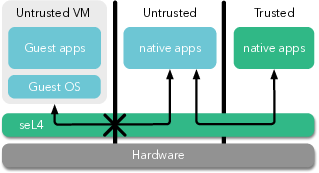
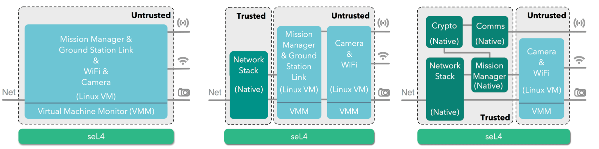

Now to the considerations.
- The aim: Security through isolation.

The first step is to identify the security and
safety requirements of your system (what are the assets that need protecting), and the threat
model (what are the attacks or failures that threaten those assets).
seL4’s power and added value lie in the proved isolation that
it provides. Being an OS kernel, its duty is to control
access to resources and communication between entities.
By using seL4, you
get the highest assurance that components can be properly
isolated from each other, with communication only possible
through explicitly provided channels.
This first step, therefore, helps to identify what it is that
you would like to isolate in your system. Typically this comes down to protecting some small
but critical component(s) that perform sensitive operations from a large and untrustworthy, but still useful, code base.
An example is a critical control loop which takes inputs from a number of sensors, including cameras with complex drivers and image processing software.
- seL4-ready?
The next step is to check which hardware platform (and exact
configuration) your product is or will be running on and whether
this platform is already supported by seL4. You will also need
to check whether seL4 is verified on this configuration and
need to know what your assurance and certification requirements
are and whether the proofs can support these.
If the answer to some of these questions is “no”, you can
check whether it’s on the roadmap
of seL4, and
contact us to
discuss extending seL4’s support.
Keep in mind that even if a particular configuration is not (yet) verified, it will still be highly robust, owing to sharing the design and much of its code with verified configurations.
Beside the kernel, your system is likely to require a number of other OS components:
remember that seL4 is just a microkernel, and will require a number of
OS services to run. You can check the list of available components
and if the ones you need are missing,
contact us, or better yet
contribute.
- Gradually getting there: Incremental cyber retrofit
Systems are rarely built from scratch, even a new product typically incorporates significant amounts of legacy software. And frequently the aim is to increase an existing product's resilience to cyber attacks.
The usual approach here is what we call an incremental cyber retrofit, which we describe in detail in
this article. In a nutshell, the idea is to gradually adapt the
existing architecture.
The first step is to put the complete legacy system into a virtual machine (VM) running
on seL4. This in itself adds no security (only a little bit of overhead), but it serves as a starting point for incremental modularisation.
The next step is to extract and isolate coarse-grain subsystems, moving from a system with a single VM to one with multiple communicating VMs.
In subsequent steps this is repeated and refined until individual trusted components are placed into their own, isolated, sandboxes running
natively on seL4.

After this you should have a much more robust system that can take advantage of seL4's proved properties to provide significantly better resilience to cyber attack.